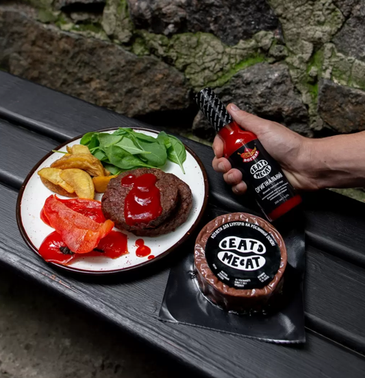

Рецепти з рослинного м'яса
- Борщ з мітболами Eat me at
- Шпинатні млинці Eat me at
- Саб сендвічі з фрикадельками Eat me at
- Теріякі-боул з мітболами Eat me at
Борщ з мітболами Eat me at
1. Приготування бульйону
Для приготування бульйону вимити, очистити та нарізати великими шматками овочі.
В каструлі нагріти ложку олії та обсмажити а ній шматочки овочів до появи аромату та присмажених місць.
Залити водою і варити на середньому вогні не менше 40 хв.
В кінці додати зелень та лаврове листя. Процідити бульйон.
2. Приготування заправки
Для приготування заправки буряк та моркву очистити та натерти, цибулю та часник подрібнити.
На середньому вогні обсмажити цибулю та часник, додати буряк та моркву, змішати та обсмажувати до мʼякості овочів.
Додати томатну пасту і тушкувати ще 15 хвилин.
За смаком додати сіль, цукор, перець, якщо потрібно — лимонний сік.
3. Підготовка овочів
Підготувати овочі: очищену картоплю нарізати кубиками, капусту нашинкувати.
4. Шпинатний шар
Для приготування шпинатного шару обсмажити подрібнений часник,
додати шпинат та готувати ще 3 хв до розм'якшення шпинату.
Додати 1\4 чашки води та протушкувати ще 3-5 хв, додати сіль та перець.
5. Доводимл до готовності
В гарячий бульйон додати заправку та картоплю, варити до напівготовності картоплі,
потім додати фрикадельки та капусту, варити ще хвилин 20.
Додати сіль та перець за смаком. Якщо необхідно, залишити настоюватись.
Шпинатні млинці Eat me at
1. Готуємо млинці
У блендері змішати шпинат, молоко, борошно та сіль. Якщо тісто вийшло занадто густе,
додати ще трохи води (нам знадобилося додаткові пів склянки).
Залишити тісто на деякий час.
2. Готуємо начинку
Обсмажити фарш Eat me at на пательні з олією,
додати часник, петрушку та гострий перець.
3. Випікаємо млинці
З цієї порції виходить 4 млинці, досить товстенькі - завдяки чому триматимуть форму.
Добре розігріти пательню з олією, налити ¼ тіста.
Млинці можна обсмажувати як з однієї, так і з обох сторін.
4. Складаємо страву
На кожен млинець намастити трохи йогурту чи сметани,
на них покладіть ¼ начинки з фаршем, зверху додати порізані оливки і авокадо.
Саб сендвічі з фрикадельками Eat me at
1. Готуємо карамелізовану цибулю
Цибулю нарізати "пір'ям", на пательні розтопити олію та карамелізувати цибулю на слабкому вогні протягом 20-30 хв,
час від часу помішуючи.
Якщо раптом карамелізована цибуля почне засмажуватися надто сильно, можна додати ложку-дві води.
Карамелізовану цибулю можна приготувати заздалегідь - вона добре зберігається в холодильнику протягом тижня.
2. Формуємо мітболи
Змішати фарш з подрібненою петрушкою і спеціями.
Поділити фарш на 6 частин та сформувати фрикадельки.
3. Готуємо фрикадельки
Обсмажувати фрикадельки 3 хв та покласти на паперовий рушник, щоб забрати зайву олію.
4. Готуємо багети
Багет розрізати на 4 частини, ми використаємо по 1/4 на сендвіч.
Підготовлені шматочки розрізати вздовж.
Також, одразу можемо натерти сир.
5. Складаємо сендвіч
Намастити на сендвіч песто та викласти половину моцарелли.
На сир викласти фрикадельки, карамелізовану цибулю та томати.
Зверху додати сир, що залишився.
6. Запікаємо сендвіч
Випікаємо сендвіч в розігрітій духовці при 180 °С протягом 5-7 хв,
подати гарячими.
Теріякі-боул з мітболами
1. Варимо рис
Рис відварити згідно інструкції на пакуванні.
2. Готуємо соус
Для приготування соусу натерти імбир та часник,
з'єднати усі інгредієнти (крім крохмалю та води) та прогріти у сотейнику до розчинення цукру.
Крохмаль добре змішати з водою, додати до соусу.
Соус довести до кипіння і тримати на вогні, помішуючи до початку загущення.
Забрати часник та імбир, додати кунжут.
3. Формуємо мітболи
Змішати фарш, зелень та спеції.
Сформувати 10 фрикадельок та викласти їх на застелену пергаментом деку.
4. Викладаємо броколі
Броколі розібрати на суцвіття та викласти разом з фрикадельками.
Посолити та трохи збризнути кунжутною олією.
5. Випікаємо фрикадельки
Запікати фрикадельки та броколі у духовці 5-7 хв.
6. Готуємо цибулю
Цибулю та перець нарізати та швидко обсмажити на добре розігрітій пательні 5-7 хв.